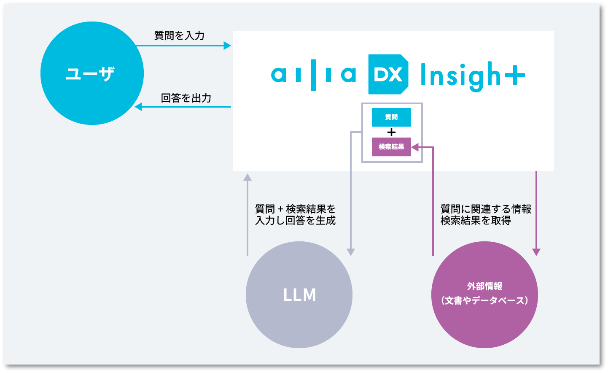
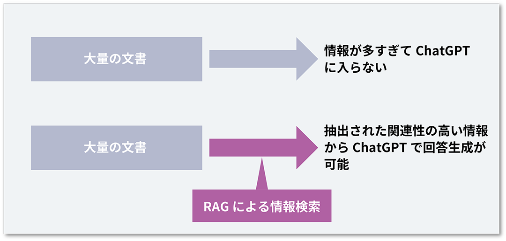
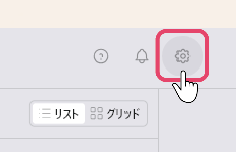
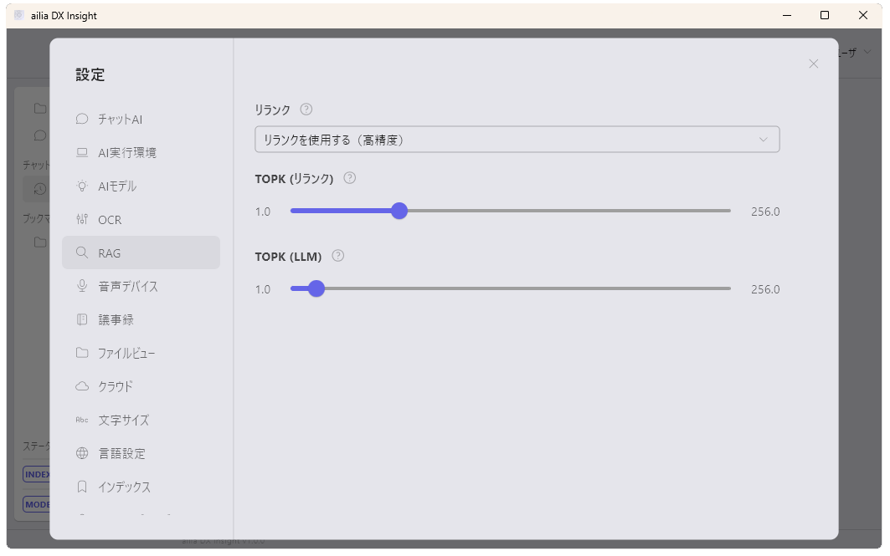

RAGによる回答精度の向上
RAGとは
Retrieval-Augmented Generation（RAG）とは大規模言語モデル（LLM）によるテキスト生成と外部情報の検索を組み合わせることで、事実に基づかない情報の生成を抑制し、AIによる回答精度を向上させる技術のことです。

ChatGPTにはトークン数に上限があるため、大量の文書をそのまま供給することはできません。
そのため、ailia DX InsightではRAGによる情報検索を事前に行い、その一部を元に回答を生成されることが行われています。

最大トークン数について
chatgpt-3.5 : 2k
chatgpt-3.5-turbo (16kと統合された）：16k
chatgpt-4 : 8k
chatgpt-4-turbo : 128k
トークン数が多いほど、複数チャンクの情報をまとめて投入可能で、精度が向上します。 ただし、その分回答が遅くなったり、コストが高くなります。
RAGの設定
- ailia DX insightの初期画面にて、右上の歯車アイコンをクリックして設定ウィンドウを表示させます。
 - 左側の項目から「RAG」を選択します。
 - リランク、TOPKについて設定することができます。